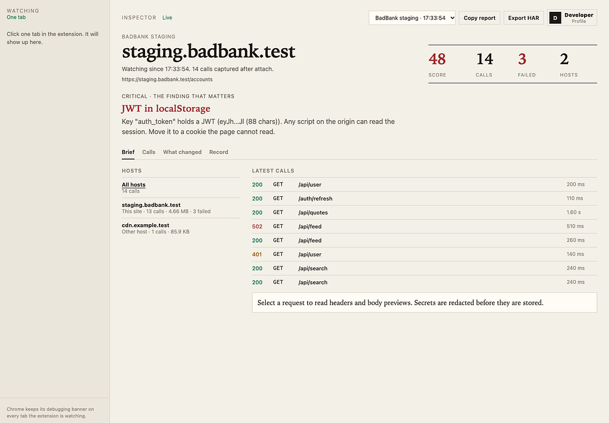
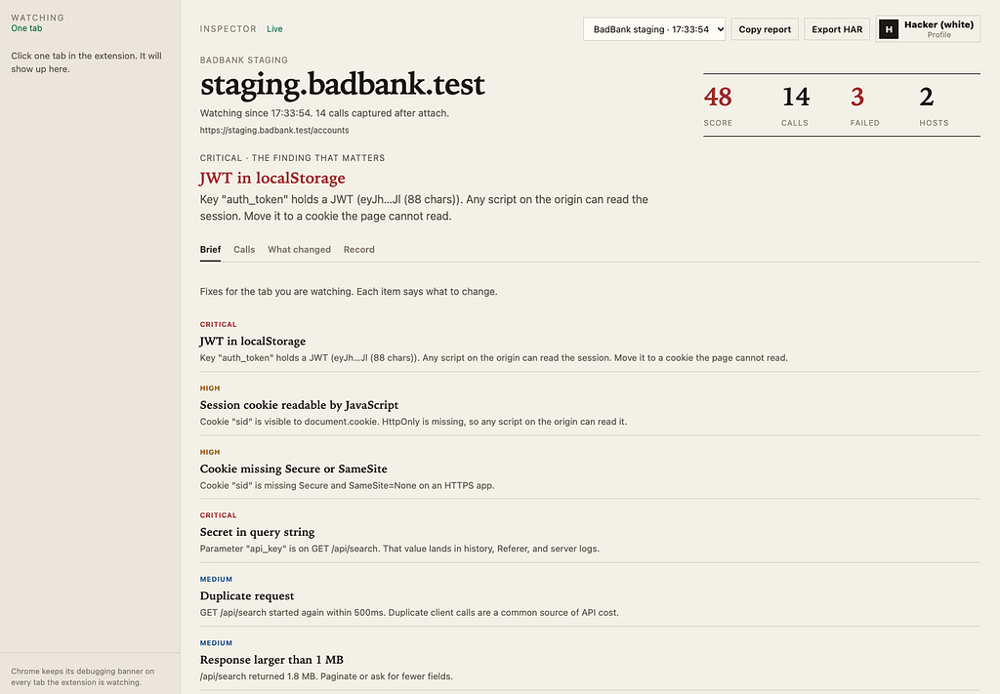
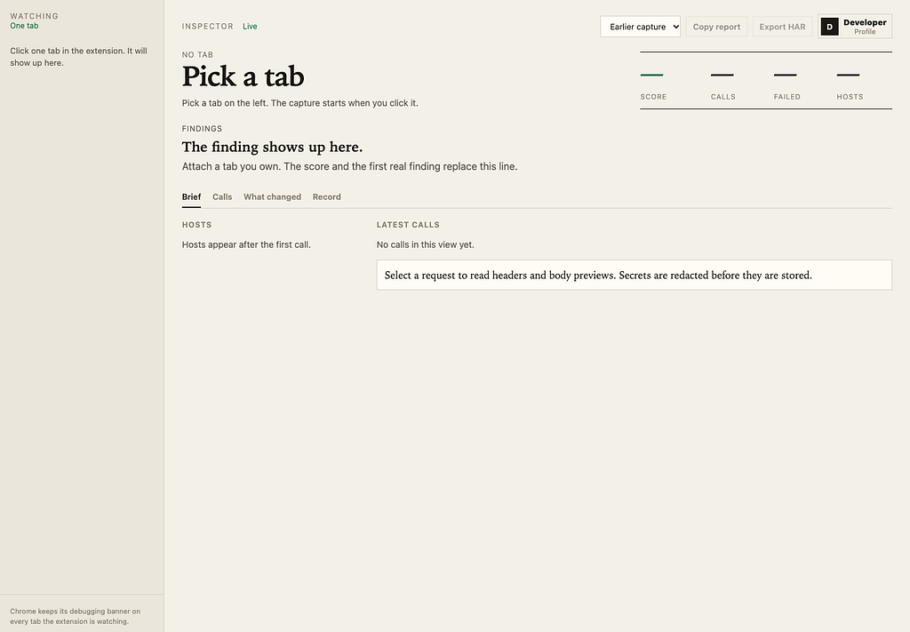
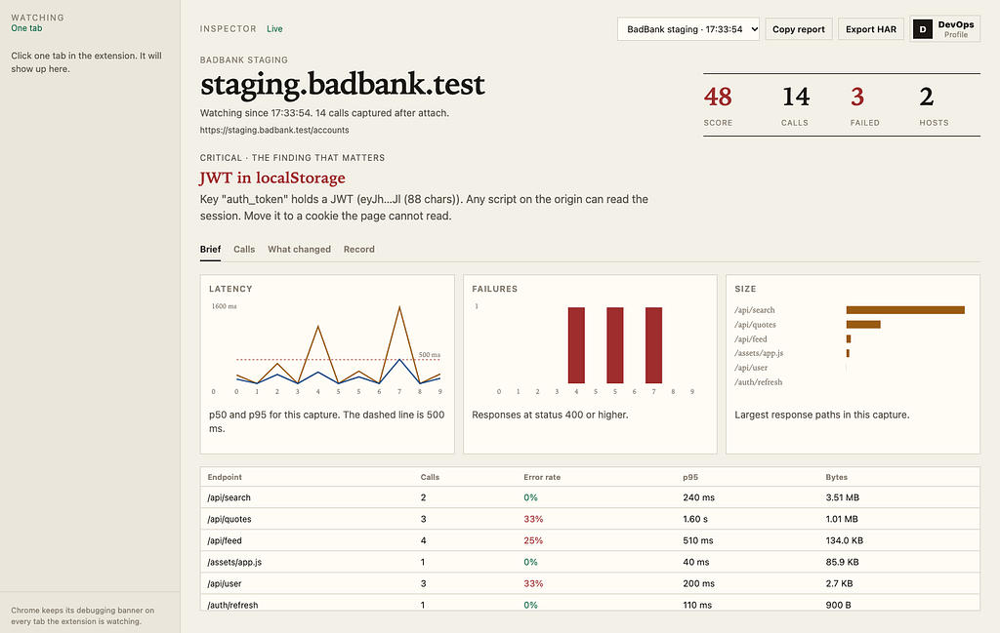

I Wanted to See What a Browser Tab Just Did. APM Could Not.
Contents
Backend traces stop at the server. The tab is the other half of the request, and it is where cookies, storage, and third-party hosts actually live. I built a small local tool for that. I called it Client Tab Inspector. After this every capture stays on my laptop only.
The gap #
On a platform team you already have the server side. Ingress logs, traces, error budgets. None of that answers a simpler question. This page the team ships, what did the browser just call, and what should we fix?

DevTools can answer it. I used it. It is one person, one tab, and the HAR you export still carries Authorization, cookies, and whatever secret landed in a query string. That file then gets pasted into Slack. That is the part I did not want.
I also did not want a vendor extension that ships the same HAR to someone else’s cloud. If I am asking an engineer to attach a debugger to their own tab, the data has to stay on 127.0.0.1.
What I built #
Three pieces. Same split I would use for any small platform.
The Chrome extension is the data plane. It attaches with chrome.debugger and only listens. It does not pause requests and it does not rewrite them.
The collector is the local control plane. It runs on 127.0.0.1:17321, checks a pairing token, redacts secrets, scores the capture, and writes SQLite on the laptop.
The dashboard is a read model. It shows the tab you already chose in the extension. It does not go looking for tabs on its own.
Nothing in that path uploads.
Admission first #

The first version listed every open tab on the dashboard. That felt convenient. It was the wrong default. A platform should not enumerate workloads until someone asks.
So the extension decides, and the dashboard follows.
You click the extension icon. Two choices: one tab at a time, or all open tabs. “All” asks you to confirm, because Chrome will show the debugging banner on every tab you attach. I left that banner alone. Hiding it would make the tool look like something the person did not agree to.
Until that choice is made, the dashboard has no tab list. After it, the dashboard only shows the tabs that are actually being watched.
DevTools and this extension cannot both own the same tab. Chrome allows one debugger client. If attach fails, close DevTools on that tab and try again.
What I treated as policy #
These are the rules I would want in a design review, so I put them in the build.
- Listen, do not intercept. No Chrome Fetch domain, and no blocking webRequest. The tool records. It does not sit in the middle of the call.
- Local only. The collector binds to 127.0.0.1. The extension’s host permission for the collector is localhost. The ingest socket drops a bad pairing token. The default token is local-dev. For anything other than a demo on your own machine, set INSPECTOR_TOKEN and paste the same value into the popup.
- Redact before disk. Authorization, cookies, and secret-like query parameters are stripped before SQLite and before the dashboard. A secret in the query string is stored as the word redacted. A JWT-shaped value in storage is stored as a short proof, the first and last characters plus the length, never the token. A short harmless value, such as a theme flag, can stay when the key does not look like a secret.
- Score from rules, not from a feeling. The score starts at 100. A critical finding costs 15, a high finding costs 8, a medium finding costs 3. The rules I shipped are the ones I kept seeing in real front ends: a secret in the query string, a JWT in web storage, a session cookie JavaScript can read, weak cookie flags on HTTPS, a duplicate GET inside 500 ms, and a response over 1 MB.
- Same path, or say you do not know. Security header checks use the response for that page. If that response was not captured, the check is unknown. I do not borrow a pass from some other response on the same host. “What changed” compares the same path only. A different URL on the same site is not a changelog.
- The record belongs to the tool. The inspector keeps its own visit ledger, so clearing Chrome history does not wipe the note that you were on this page. I did not try to rebuild history Chrome has already deleted. That data is gone. The dashboard says so. You can also delete the inspector’s own ledger, or delete the captured sessions for a host, when you are done.
- An empty list is allowed. The debugger starts when you attach. Calls that finished before that moment are not replayed. A score with zero calls is still real. It is the cookie and storage snapshot. I would rather show an empty list than invent traffic.
How I ran it #
cd client-inspector
npm install
npm startOpen http://127.0.0.1:17321.
In Chrome, open chrome://extensions, turn on Developer mode, and load the extension folder unpacked. Click the icon. Pick one tab, or confirm all open tabs. Leave the debugging banner where Chrome put it.
The dashboard then follows that choice. The first screen is a short brief: host, score, call count, failures, other hosts, and the single most important finding. From there I switch the profile.

A developer sees the hosts and the latest calls. DevOps sees latency, failures, and size. Another profile tells the same capture as a short story of what the page did. The security profiles are three ways to read one finding. White is the fix. Gray is the report you can hand over. Black is what was already visible in the tab, with the values still redacted.
Copy report and Export HAR are the handoff. HAR 1.2 and a markdown report, both after redaction. That is the file I am willing to send to security or QA.
There is a small fixture app on /fixture if you want a rehearsal page you own. The live dashboard does not load a fake session for you. If the tab is quiet, the tab is quiet.
What I left out on purpose #
A few things were tempting, and wrong for this job.
- I did not send captures anywhere. The moment this needs a backend, it is a different product, with a different threat model.
- I did not turn the security view into instructions for abusing a finding. The black profile says what the page already exposed. It does not say how to use it.
- I did not undelete Chrome history from disk. If the browser has forgotten a visit, the tool says it has no visit.
- I did not attach to a tab until the extension had an explicit watch mode. Convenience was the bug.
What I still do not like #
Bodies over 64 KB keep the size and drop the text. That is the right cap for a laptop, and it means a large JSON error body can hide the one field you wanted.
The “registrable domain” is the last two labels. That is fine for example.com and wrong for example.co.uk.
“All open tabs” is honest, and noisy. Every attached tab shows Chrome’s debugging banner. I kept the confirm step so that choice is deliberate.
Calls from before you attach are missing. The brief says the watch started at attach. I still wish the first minute felt fuller. Filling it with guessed requests would be worse.
Why I would use it again #
For a platform team the useful moment is small. Open the page you ship, attach, and read one finding before you open a ticket. Then export the report. The server trace still matters. This is the other side of the same request, kept on the machine that made it.
The code is here: client-tab-inspector. I deleted the local capture database before the first push. The SQLite file stays gitignored. The repo has the tool. It does not have anyone’s browsing.
FYI:
- APM means Application Performance Monitoring. It is the tool that watches your backend: how long an API took, which service failed, and the path from the load balancer to the database. Datadog, New Relic, and Grafana are APM.
Originally published on Medium.